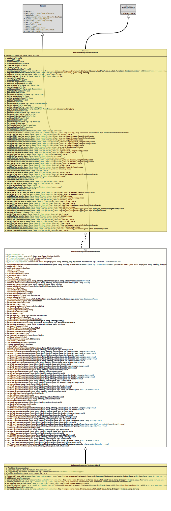

Class EnhancedPreparedStatementBase
- All Implemented Interfaces:
AutoCloseable,EnhancedPreparedStatement
- Direct Known Subclasses:
EnhancedPreparedStatementImpl
EnhancedPreparedStatement.- Author:
- Thomas Thrien (thomas.thrien@tquadrat.org)
- Version:
- $Id: EnhancedPreparedStatementBase.java 1075 2023-10-02 12:37:07Z tquadrat $
- Since:
- 0.1.0
- UML Diagram
-

UML Diagram for "org.tquadrat.foundation.sql.internal.EnhancedPreparedStatementBase"
{kind=link}
-
Nested Class Summary
Nested ClassesModifier and TypeClassDescriptionprotected final classThe base class for a variant ofParameterMetaDatathat is used byEnhancedPreparedStatement.Nested classes/interfaces inherited from interface org.tquadrat.foundation.sql.EnhancedPreparedStatement
EnhancedPreparedStatement.StatementLogger -
Field Summary
FieldsModifier and TypeFieldDescriptionprivate intThe counter for the added batch commands.The parameter index.private final PreparedStatementThe wrappedPreparedStatement.private final StringThe statement source.private final LazyMap<String, StatementValue> The values.Fields inherited from interface org.tquadrat.foundation.sql.EnhancedPreparedStatement
VARIABLE_PATTERN -
Constructor Summary
ConstructorsModifierConstructorDescriptionprotectedEnhancedPreparedStatementBase(String sourceStatement, PreparedStatement preparedStatement, Map<String, int[]> parameterIndex) Creates a new instance ofEnhancedPreparedStatementBase. -
Method Summary
Modifier and TypeMethodDescriptionfinal voidaddBatch()Adds a set of parameters to thisEnhancedPreparedStatementinstance's batch of commands.protected abstract booleanReturns a flag that indicates whether a stacktrace should be added to the logging.final voidcancel()Cancels thisEnhancedPreparedStatementobject if both the DBMS and driver support aborting an SQL statement.final voidEmpties thisEnhancedPreparedStatementinstance's current list of SQL commands.voidClears the current parameter values immediately.final voidClears all the warnings reported on thisEnhancedPreparedStatementinstance.final voidclose()Releases this instance's database and JDBC resources immediately instead of waiting for this to happen when it is automatically closed.final voidSpecifies that thisEnhancedPreparedStatementwill be closed when all its dependent result sets are closed.protected abstract voiddoLogging(String operation, StackTraceElement[] stackTrace) Composes the log information and sends it.final StringenquoteIdentifier(String identifier, boolean alwaysQuote) Returns a SQL identifier.final StringenquoteLiteral(String value) Returns aStringenclosed in single quotes.final StringReturns aStringrepresenting a National Character Set Literal enclosed in single quotes and prefixed with a upper case letterN.final booleanexecute()Executes the SQL statement in thisPreparedStatementobject, which may be any kind of SQL statement.final int[]Submits a batch of commands to the database for execution and if all commands execute successfully, returns an array of update counts.long[]Submits a batch of commands to the database for execution and if all commands execute successfully, returns an array of update counts.final longExecutes the SQL statement in thisEnhancedPreparedStatementinstance.final ResultSetExecutes the SQL query in thisPreparedStatementobject and returns theResultSetobject generated by the query.final intExecutes the SQL statement in thisEnhancedPreparedStatementinstance.final ConnectionRetrieves theConnectioninstance that produced thePreparedStatementinstance wrapped by thisEnhancedPreparedStatement.protected final Collection<StatementValue> Provides the current values for logging purposes.final intRetrieves the direction for fetching rows from database tables that is the default for result sets generated from thisEnhancedPreparedStatementinstance.final intRetrieves the number of result set rows that is the default fetch size forResultSetinstances generated from thisEnhancedPreparedStatementinstance.final ResultSetRetrieves any auto-generated keys created as a result of executing thisEnhancedPreparedStatementinstance.final longRetrieves the maximum number of rows that aResultSetinstance produced by thisEnhancedPreparedStatementinstance can contain.final longRetrieves the current result as an update count.final intRetrieves the maximum number of bytes that can be returned for character and binary column values in aResultSetobject produced by thisEnhancedPreparedStatementobject.final intRetrieves the maximum number of rows that aResultSetinstance produced by thisEnhancedPreparedStatementinstance can contain.final ResultSetMetaDataRetrieves aResultSetMetaDataobject that contains information about the columns of theResultSetinstance that will be returned when thisEnhancedPreparedStatementinstance is executed.final booleanMoves to thisEnhancedPreparedStatementinstance's next result, returnstrueif it is aResultSetinstance, and implicitly closes any currentResultSetinstance(s) previously obtained with the methodEnhancedPreparedStatement.getResultSet().final booleangetMoreResults(int current) Moves to thisEnhancedPreparedStatementinstance's next result, deals with any currentResultSetinstance(s) according to the instructions specified by the given flag, and returnstrueif the next result is aResultSetobject.protected final int[]getParameterIndexes(String parameterName) Returns the parameter indexes for the given parameter name.Retrieves the number, types and properties of thisEnhancedPreparedStatementinstance's parameters.protected final Collection<String> Returns the parameter names for thisEnhancedPreparedStatement.final intRetrieves the number of seconds the driver will wait for aStatementinstance to execute.final ResultSetRetrieves the current result as aResultSetinstance.final intRetrieves the result set concurrency forResultSetinstances generated by thisEnhancedPreparedStatementinstance.final intRetrieves the result set holdability forResultSetinstances generated by thisEnhancedPreparedStatementinstance.final intRetrieves the result set type forResultSetinstances generated by thisEnhancedPreparedStatementinstance.protected final StringProvides the source statement for logging purposes.final intRetrieves the current result as an update count.final SQLWarningRetrieves the first warning reported by calls on thisEnhancedPreparedStatementinstance.final booleanisClosed()Retrieves whether thisEnhancedPreparedStatementobject has been closed.final booleanReturns a value indicating whether thisEnhancedPreparedStatementwill be closed when all its dependent result sets are closed.abstract booleanChecks whether logging is currently enabled.final booleanReturns a value indicating whether the wrappedPreparedStatementis poolable or not.final booleanisSimpleIdentifier(String identifier) Retrieves whetheridentifieris a simple SQL identifier.final voidSets the designated parameter to the givenArrayinstance.voidsetAsciiStream(String parameterName, InputStream value) Sets the designated parameter to the givenInputStream.voidsetAsciiStream(String parameterName, InputStream value, int length) Sets the designated parameter to the givenInputStreamwhich will have the specified number of bytes.voidsetAsciiStream(String parameterName, InputStream value, long length) Sets the designated parameter to the givenInputStreamwhich will have the specified number of bytes.final voidsetBigDecimal(String parameterName, BigDecimal value) Sets the designated parameter to the given JavaBigDecimalvalue.voidsetBinaryStream(String parameterName, InputStream value) Sets the designated parameter to the givenInputStream.voidsetBinaryStream(String parameterName, InputStream value, int length) Sets the designated parameter to the givenInputStreamwhich will have the specified number of bytes.voidsetBinaryStream(String parameterName, InputStream value, long length) Sets the designated parameter to the givenInputStreamwhich will have the specified number of bytes.final voidsetBlob(String parameterName, InputStream value) Sets the designated parameter to aInputStreamobject.final voidsetBlob(String parameterName, InputStream value, long length) Sets the designated parameter to aInputStreamobject.final voidSets the designated parameter to the given JavaBlobinstance.final voidsetBoolean(String parameterName, boolean value) Sets the designated parameter to the given Javabooleanvalue.final voidSets the designated parameter to the given Javabytevalue.final voidSets the designated parameter to the given Java array of bytes.final voidsetCharacterStream(String parameterName, Reader value) Sets the designated parameter to the givenReaderinstance.final voidsetCharacterStream(String parameterName, Reader value, int length) Sets the designated parameter to the givenReaderinstance, which provides the given number of characters.final voidsetCharacterStream(String parameterName, Reader value, long length) Sets the designated parameter to the givenReaderinstance, which provides the given number of characters.final voidSets the designated parameter to aReaderinstance.final voidSets the designated parameter to aReaderinstance.final voidSets the designated parameter to the givenClobinstance.final voidsetCursorName(String name) Sets the SQL cursor name to the given String, which will be used by subsequent statementexecute()methods.final voidSets the designated parameter to the givenDatevalue using the default time zone of the virtual machine that is running the application.voidfinal voidSets the designated parameter to the given Javadoublevalue.final voidsetFetchDirection(int direction) Gives the driver a hint as to the direction in which rows will be processed inResultSetinstances created using thisEnhancedPreparedStatementobject.final voidsetFetchSize(int rows) Gives the JDBC driver a hint as to the number of rows that should be fetched from the database when more rows are needed forResultSetinstances generated by thisEnhancedPreparedStatementinstance.final voidSets the designated parameter to the given Javafloatvalue.final voidSets the designated parameter to the given Javaintvalue.final voidsetLargeMaxRows(long max) Sets the limit for the maximum number of rows that anyResultSetinstance generated by thisEnhancedPreparedStatementinstance can contain.final voidSets the designated parameter to the given Javalongvalue.final voidsetMaxFieldSize(int max) Sets the limit for the maximum number of bytes that can be returned for character and binary column values in aResultSetobject produced by thisStatementobject.final voidsetMaxRows(int max) Sets the limit for the maximum number of rows, that anyResultSetinstance generated by thisEnhancedPreparedStatementinstance can contain, to the given number.final voidsetNCharacterStream(String parameterName, Reader value) Sets the designated parameter to the givenReaderinstance.final voidsetNCharacterStream(String parameterName, Reader value, long length) Sets the designated parameter to the givenReaderinstance.final voidSets the designated parameter to aReaderinstance.final voidSets the designated parameter to aReaderinstance.final voidSets the designated parameter to the givenNClobvalue.final voidsetNString(String parameterName, String value) Sets the designated parameter to the given JavaStringvalue.final voidSets the designated parameter to SQLNULL.voidSets the designated parameter to SQLNULL.final voidSets the value of the designated parameter using the given object.voidSets the value of the designated parameter with the given object.final voidSets the value of the designated parameter using the given object.final voidsetQueryTimeout(int timeout) Sets the number of seconds the driver will wait for aStatementinstance to execute to the given number of seconds.final voidSets the designated parameter to the givenREF(<structured-type>)value.final voidSets the designated parameter to the givenRowIdinstance.final voidSets the designated parameter to the given Javashortvalue.final voidSets the designated parameter to the givenSQLXMLvalue.final voidSets the designated parameter to the given JavaStringvalue.final voidSets the designated parameter to the givenTimevalue.final voidfinal voidsetTimestamp(String parameterName, Timestamp value) Sets the designated parameter to the givenTimestampvalue.final voidsetTimestamp(String parameterName, Timestamp value, Calendar calendar) final voidSets the designated parameter to the givenURLvalue.
-
Field Details
-
m_BatchCounter
The counter for the added batch commands. -
m_ParameterIndex
The parameter index.
The parameter names are the keys for the map, the values are the indexes.
-
m_PreparedStatement
The wrappedPreparedStatement. -
m_SourceStatement
The statement source. -
m_Values
The values.
-
-
Constructor Details
-
EnhancedPreparedStatementBase
protected EnhancedPreparedStatementBase(String sourceStatement, PreparedStatement preparedStatement, Map<String, int[]> parameterIndex) Creates a new instance ofEnhancedPreparedStatementBase.- Parameters:
sourceStatement- The original SQL statement with the placeholders; mainly used for logging purposes.preparedStatement- The wrapped instance ofPreparedStatement.parameterIndex- The mapping for the named placeholders to the position based placeholders.
-
-
Method Details
-
addBatch
Adds a set of parameters to thisEnhancedPreparedStatementinstance's batch of commands.- Specified by:
addBatchin interfaceEnhancedPreparedStatement- Throws:
SQLException- A database access error occurred or this method was called on a closedEnhancedPreparedStatement.- See Also:
-
addStacktrace
Returns a flag that indicates whether a stacktrace should be added to the logging.- Returns:
trueif the stacktrace should be created and added,falseotherwise.
-
cancel
Cancels this
EnhancedPreparedStatementobject if both the DBMS and driver support aborting an SQL statement.This method can be used by one thread to cancel a statement that is being executed by another thread.
- Specified by:
cancelin interfaceEnhancedPreparedStatement- Throws:
SQLException- A database access error occurred or this method was called on a closedEnhancedPreparedStatement.
-
clearBatch
Empties thisEnhancedPreparedStatementinstance's current list of SQL commands.- Specified by:
clearBatchin interfaceEnhancedPreparedStatement- Throws:
SQLException- A database access error occurred, this method was called on a closedEnhancedPreparedStatement, or the driver does not support batch updates.- See Also:
-
clearParameters
Clears the current parameter values immediately.
In general, parameter values remain in force for repeated use of a statement. Setting a parameter value automatically clears its previous value. However, in some cases it is useful to immediately release the resources used by the current parameter values; this can be done by calling the method
clearParameters().- Specified by:
clearParametersin interfaceEnhancedPreparedStatement- Throws:
SQLException- A database access error occurred or this method was called on a closedEnhancedPreparedStatement.
-
clearWarnings
Clears all the warnings reported on this
EnhancedPreparedStatementinstance. After a call to this method, the methodEnhancedPreparedStatement.getWarnings()will returnnulluntil a new warning is reported for thisEnhancedPreparedStatementinstance.- Specified by:
clearWarningsin interfaceEnhancedPreparedStatement- Throws:
SQLException- A database access error occurred or this method was called on a closedEnhancedPreparedStatement.
-
close
Releases this instance's database and JDBC resources immediately instead of waiting for this to happen when it is automatically closed. It is generally good practice to release resources as soon as you are finished with them to avoid tying up database resources.
Calling the method
closeon aEnhancedPreparedStatementobject that is already closed has no effect.- Specified by:
closein interfaceAutoCloseable- Specified by:
closein interfaceEnhancedPreparedStatement- Throws:
SQLException- A database access error occurred.
-
closeOnCompletion
Description copied from interface:EnhancedPreparedStatementSpecifies that this
EnhancedPreparedStatementwill be closed when all its dependent result sets are closed. If the execution of theEnhancedPreparedStatementdoes not produce any result sets, this method has no effect.- Specified by:
closeOnCompletionin interfaceEnhancedPreparedStatement- Throws:
SQLException- This method was called on a closedEnhancedPreparedStatement.
-
doLogging
Composes the log information and sends it.- Parameters:
operation- The operation that logs.stackTrace- The stack trace; can benull.
-
enquoteIdentifier
Returns a SQL identifier. If
identifieris a simple SQL identifier:- Return the original value if
alwaysQuoteisfalse - Return a delimited identifier if
alwaysQuoteistrue
If
identifieris not a simple SQL identifier,identifierwill be enclosed in double quotes if not already present. If the datasource does not support double quotes for delimited identifiers, the identifier should be enclosed by the string returned fromDatabaseMetaData.getIdentifierQuoteString(). If the datasource does not support delimited identifiers, aSQLFeatureNotSupportedExceptionshould be thrown.A
SQLExceptionwill be thrown ifidentifiercontains any characters invalid in a delimited identifier or the identifier length is invalid for the datasource.- Specified by:
enquoteIdentifierin interfaceEnhancedPreparedStatement- Parameters:
identifier- An SQL identifier.alwaysQuote- Indicates if a simple SQL identifier should be returned as a quoted identifier.- Returns:
- A simple SQL identifier or a delimited identifier
- Throws:
SQLException- The identifier was not a valid identifier.
- Return the original value if
-
enquoteLiteral
Returns a
Stringenclosed in single quotes. Any occurrence of a single quote within the string will be replaced by two single quotes.Examples of the conversion: Value Result Hello 'Hello' G'Day 'G''Day' 'G''Day' '''G''''Day''' I'''M 'I''''''M' - Specified by:
enquoteLiteralin interfaceEnhancedPreparedStatement- Parameters:
value- A character String.- Returns:
- A string enclosed by single quotes with every single quote converted to two single quotes
- Throws:
SQLException- A database access error occurred.
-
enquoteNCharLiteral
Returns a
Stringrepresenting a National Character Set Literal enclosed in single quotes and prefixed with a upper case letterN. Any occurrence of a single quote within the string will be replaced by two single quotes.Examples of the conversion: Value Result Hello N'Hello' G'Day N'G''Day' 'G''Day' N'''G''''Day''' I'''M N'I''''''M' N'Hello' N'N''Hello''' - Specified by:
enquoteNCharLiteralin interfaceEnhancedPreparedStatement- Parameters:
s- A character string- Returns:
- The result of replacing every single quote character in the argument by two single quote characters where this entire result is then prefixed with 'N'.
- Throws:
SQLException- A database access error occurred.- See Also:
-
execute
Executes the SQL statement in this
PreparedStatementobject, which may be any kind of SQL statement.Some prepared statements return multiple results; the
execute()method handles these complex statements as well as the simpler form of statements handled by the methodsEnhancedPreparedStatement.executeQuery()andEnhancedPreparedStatement.executeUpdate().The
execute()method returns abooleanto indicate the form of the first result. You must call either the methodEnhancedPreparedStatement.getResultSet()orEnhancedPreparedStatement.getUpdateCount()to retrieve the result; you must callEnhancedPreparedStatement.getMoreResults()to move to any subsequent result(s).- Specified by:
executein interfaceEnhancedPreparedStatement- Returns:
trueif the first result is aResultSetinstance;falseif the first result is an update count or there is no result.- Throws:
SQLException- A database access error occurred, this method was called on a closedEnhancedPreparedStatementor no argument was supplied for at least one parameter.- See Also:
-
executeBatch
Submits a batch of commands to the database for execution and if all commands execute successfully, returns an array of update counts. The
intelements of the array that is returned are ordered to correspond to the commands in the batch, which are ordered according to the order in which they were added to the batch.The elements in the array returned by the method
executeBatch()may be one of the following:- A number greater than or equal to zero – indicates that the command was processed successfully and is an update count giving the number of rows in the database that were affected by the command's execution.
- A value of
Statement.SUCCESS_NO_INFO(-2 – indicates that the command was processed successfully but that the number of rows affected is unknown.
If one of the commands in a batch update fails to execute properly, this method throws a
BatchUpdateException, and a JDBC driver may or may not continue to process the remaining commands in the batch. However, the driver's behaviour must be consistent with a particular DBMS, either always continuing to process commands or never continuing to process commands. If the driver continues processing after a failure, the array returned by the methodBatchUpdateException.getUpdateCounts()will contain as many elements as there are commands in the batch, and at least one of the elements will beStatement.EXECUTE_FAILED(-3 – indicating that the command failed to execute successfully); it occurs only if a driver continues to process commands after a command failed.- Specified by:
executeBatchin interfaceEnhancedPreparedStatement- Returns:
- An array of update counts containing one element for each command in the batch. The elements of the array are ordered according to the order in which commands were added to the batch.
- Throws:
SQLException- A database access error occurred, this method was called on a closedEnhancedPreparedStatementor the driver does not support batch statements.- See Also:
-
executeLargeBatch
Description copied from interface:EnhancedPreparedStatementSubmits a batch of commands to the database for execution and if all commands execute successfully, returns an array of update counts. The
intelements of the array that is returned are ordered to correspond to the commands in the batch, which are ordered according to the order in which they were added to the batch.The elements in the array returned by the method
executeBatch()may be one of the following:- A number greater than or equal to zero – indicates that the command was processed successfully and is an update count giving the number of rows in the database that were affected by the command's execution.
- A value of
Statement.SUCCESS_NO_INFO(-2 – indicates that the command was processed successfully but that the number of rows affected is unknown.
If one of the commands in a batch update fails to execute properly, this method throws a
BatchUpdateException, and a JDBC driver may or may not continue to process the remaining commands in the batch. However, the driver's behaviour must be consistent with a particular DBMS, either always continuing to process commands or never continuing to process commands. If the driver continues processing after a failure, the array returned by the methodBatchUpdateException.getLargeUpdateCounts()will contain as many elements as there are commands in the batch, and at least one of the elements will beStatement.EXECUTE_FAILED(-3 – indicating that the command failed to execute successfully); it occurs only if a driver continues to process commands after a command failed.This method should be used when the returned row count may exceed
Integer.MAX_VALUE.- Specified by:
executeLargeBatchin interfaceEnhancedPreparedStatement- Returns:
- An array of update counts containing one element for each command in the batch. The elements of the array are ordered according to the order in which commands were added to the batch.
- Throws:
SQLException- A database access error occurred, this method was called on a closedEnhancedPreparedStatementor the driver does not support batch statements.- See Also:
-
executeLargeUpdate
Executes the SQL statement in this
EnhancedPreparedStatementinstance. It must be an SQL Data Manipulation Language (DML) statement, such asINSERT,UPDATEorDELETE; or an SQL statement that returns nothing, such as a DDL statement.This method should be used when the returned row count may exceed
Integer.MAX_VALUE.The default implementation will throw
UnsupportedOperationException.- Specified by:
executeLargeUpdatein interfaceEnhancedPreparedStatement- Returns:
- Either the row count for SQL Data Manipulation Language (DML) statements or 0 for SQL statements that return nothing.
- Throws:
SQLException- A database access error occurred, this method was called on a closedEnhancedPreparedStatementor the SQL statement returns aResultSetobject.
-
executeQuery
Executes the SQL query in this
PreparedStatementobject and returns theResultSetobject generated by the query.- Specified by:
executeQueryin interfaceEnhancedPreparedStatement- Returns:
- A
ResultSetinstance that contains the data produced by the query; nevernull. - Throws:
SQLException- A database access error occurred, this method was called on a closedEnhancedPreparedStatementor the SQL statement did not return aResultSetobject.
-
executeUpdate
Executes the SQL statement in this
EnhancedPreparedStatementinstance. It must be an SQL Data Manipulation Language (DML) statement, such asINSERT,UPDATEorDELETE; or an SQL statement that returns nothing, such as a DDL statement.- Specified by:
executeUpdatein interfaceEnhancedPreparedStatement- Returns:
- Either the row count for SQL Data Manipulation Language (DML) statements or 0 for SQL statements that return nothing.
- Throws:
SQLException- A database access error occurred, this method was called on a closedEnhancedPreparedStatementor the SQL statement returns aResultSetobject.
-
getCurrentValues
Provides the current values for logging purposes.- Returns:
- The current values.
-
getConnection
Retrieves the
Connectioninstance that produced thePreparedStatementinstance wrapped by thisEnhancedPreparedStatement.- Specified by:
getConnectionin interfaceEnhancedPreparedStatement- Returns:
- The connection that produced the wrapped prepared statement.
- Throws:
SQLException- A database access error occurred or this method was called on a closedEnhancedPreparedStatement.
-
getFetchDirection
Retrieves the direction for fetching rows from database tables that is the default for result sets generated from this
EnhancedPreparedStatementinstance.If this
EnhancedPreparedStatementinstance has not set a fetch direction by calling the methodEnhancedPreparedStatement.setFetchDirection(int), the return value is implementation-specific.- Specified by:
getFetchDirectionin interfaceEnhancedPreparedStatement- Returns:
- The default fetch direction for result sets generated from this
EnhancedPreparedStatementinstance. - Throws:
SQLException- A database access error occurred or this method was called on a closedEnhancedPreparedStatement.- See Also:
-
getFetchSize
Retrieves the number of result set rows that is the default fetch size for
ResultSetinstances generated from thisEnhancedPreparedStatementinstance. If this statement instance has not set a fetch size by calling the methodEnhancedPreparedStatement.setFetchSize(int), the return value is implementation-specific.- Specified by:
getFetchSizein interfaceEnhancedPreparedStatement- Returns:
- The default fetch size for result sets generated from this
EnhancedPreparedStatementinstance. - Throws:
SQLException- A database access error occurred or this method was called on a closedEnhancedPreparedStatement.- See Also:
-
getGeneratedKeys
Retrieves any auto-generated keys created as a result of executing this
EnhancedPreparedStatementinstance. If this statement did not generate any keys, an emptyResultSetobject is returned.- Specified by:
getGeneratedKeysin interfaceEnhancedPreparedStatement- Returns:
- A
ResultSetinstance containing the auto-generated key(s) generated by the execution of thisEnhancedPreparedStatementinstance. - Throws:
SQLException- A database access error occurred or this method was called on a closedStatement.
-
getLargeMaxRows
Retrieves the maximum number of rows that a
ResultSetinstance produced by thisEnhancedPreparedStatementinstance can contain. If this limit is exceeded, the excess rows are silently dropped.This method should be used when the returned row limit may exceed
Integer.MAX_VALUE.The default implementation will return
0.- Specified by:
getLargeMaxRowsin interfaceEnhancedPreparedStatement- Returns:
- The current maximum number of rows for a
ResultSetinstance produced by thisEnhancedPreparedStatementinstance; zero means there is no limit, or that the method is not supported by the JDBC driver. - Throws:
SQLException- A database access error occurred or this method was called on a closedEnhancedPreparedStatement.- See Also:
-
getLargeUpdateCount
Retrieves the current result as an update count. If the result is a
ResultSetobject or there are no more results, -1 is returned.This method should be used when the returned row count may exceed
Integer.MAX_VALUE.The default implementation will throw
UnsupportedOperationException- Specified by:
getLargeUpdateCountin interfaceEnhancedPreparedStatement- Returns:
- The current result as an update count; -1 if the current result
is a
ResultSetobject or there are no more results. - Throws:
SQLException- A database access error occurred or this method was called on a closedEnhancedPreparedStatement.- See Also:
-
getMaxFieldSize
Retrieves the maximum number of bytes that can be returned for character and binary column values in a
ResultSetobject produced by thisEnhancedPreparedStatementobject.This limit applies only to
JDBCType.BINARY,JDBCType.VARBINARY,JDBCType.LONGVARBINARY,JDBCType.CHAR,JDBCType.VARCHAR,JDBCType.NCHAR,JDBCType.NVARCHAR,JDBCType.LONGNVARCHARandJDBCType.LONGVARCHARcolumns. If the limit is exceeded, the excess data is silently discarded.- Specified by:
getMaxFieldSizein interfaceEnhancedPreparedStatement- Returns:
- The current column size limit for columns storing character and binary values; zero means there is no limit.
- Throws:
SQLException- A database access error occurred or this method was called on a closedEnhancedPreparedStatement- See Also:
-
getMaxRows
Retrieves the maximum number of rows that a
ResultSetinstance produced by thisEnhancedPreparedStatementinstance can contain. If this limit is exceeded, the excess rows are silently dropped.- Specified by:
getMaxRowsin interfaceEnhancedPreparedStatement- Returns:
- The current maximum number of rows for a
ResultSetinstance produced by thisEnhancedPreparedStatementinstance; zero means there is no limit. - Throws:
SQLException- A database access error occurred or this method was called on a closedEnhancedPreparedStatement.- See Also:
-
getMetaData
Retrieves a
ResultSetMetaDataobject that contains information about the columns of theResultSetinstance that will be returned when thisEnhancedPreparedStatementinstance is executed.Because the
PreparedStatementthat is wrapped by thisEnhancedPreparedStatementis precompiled, it is possible to know about theResultSetobject that it will return without having to execute it. Consequently, it is possible to invoke the methodgetMetaData()on aEnhancedPreparedStatementinstance rather than waiting to execute it and then invoking theResultSet.getMetaData()method on theResultSetinstance that is returned.- Specified by:
getMetaDatain interfaceEnhancedPreparedStatement- Returns:
- The description of a
ResultSetobject's columns ornullif the driver cannot return aResultSetMetaDataobject. - Throws:
SQLException- A database access error occurred or this method was called on a closedPreparedStatement.
-
getMoreResults
Moves to this
EnhancedPreparedStatementinstance's next result, returnstrueif it is aResultSetinstance, and implicitly closes any currentResultSetinstance(s) previously obtained with the methodEnhancedPreparedStatement.getResultSet().There are no more results when the following is true:
// stmt is a EnhancedPreparedStatement object ((stmt.getMoreResults() == false) && (stmt.getUpdateCount() == -1))- Specified by:
getMoreResultsin interfaceEnhancedPreparedStatement- Returns:
trueif the next result is aResultSetinstance;falseif it is an update count or there are no more results.- Throws:
SQLException- A database access error occurred or this method was called on a closedEnhancedPreparedStatement.- See Also:
-
getMoreResults
Moves to this
EnhancedPreparedStatementinstance's next result, deals with any currentResultSetinstance(s) according to the instructions specified by the given flag, and returnstrueif the next result is aResultSetobject.There are no more results when the following is true:
// stmt is a Statement object ((stmt.getMoreResults( current ) == false) && (stmt.getUpdateCount() == -1))- Specified by:
getMoreResultsin interfaceEnhancedPreparedStatement- Parameters:
current- One of the followingStatementconstants indicating what should happen to currentResultSetinstances obtained using the methodEnhancedPreparedStatement.getResultSet():Statement.CLOSE_CURRENT_RESULT,Statement.KEEP_CURRENT_RESULT, orStatement.CLOSE_ALL_RESULTS.- Returns:
trueif the next result is aResultSetinstance,falseif it is an update count or there are no more results- Throws:
SQLException- A database access error occurred, this method was called on a closedEnhancedPreparedStatementor the argument supplied is not one of the following:Statement.CLOSE_CURRENT_RESULT,Statement.KEEP_CURRENT_RESULT, orStatement.CLOSE_ALL_RESULTS.- See Also:
-
getParameterIndexes
Returns the parameter indexes for the given parameter name.- Parameters:
parameterName- The name of the parameter, prefixed by a colon.- Returns:
- The parameter indexes for this parameter name.
- Throws:
SQLException- The given parameter name is not defined.
-
getParameterMetaData
Description copied from interface:EnhancedPreparedStatementRetrieves the number, types and properties of thisEnhancedPreparedStatementinstance's parameters.- Specified by:
getParameterMetaDatain interfaceEnhancedPreparedStatement- Returns:
- An instance of
ParameterMetaDatathat contains information about the number, types and properties for each named parameter of thisEnhancedPreparedStatementinstance. - Throws:
SQLException- A database access error occurred or this method was called on a closedEnhancedPreparedStatement.- See Also:
-
getParameterNames
Returns the parameter names for thisEnhancedPreparedStatement.- Returns:
- The parameter names.
-
getQueryTimeout
Retrieves the number of seconds the driver will wait for a
Statementinstance to execute. If the limit is exceeded, aSQLTimeoutExceptionis thrown.- Specified by:
getQueryTimeoutin interfaceEnhancedPreparedStatement- Returns:
- The current query timeout limit in seconds; zero means there is no limit.
- Throws:
SQLException- A database access error occurred or this method was called on a closedEnhancedPreparedStatement.- See Also:
-
getResultSet
Retrieves the current result as a
ResultSetinstance.- Specified by:
getResultSetin interfaceEnhancedPreparedStatement- Returns:
- The current result as a
ResultSetinstance ornullif the result is an update count or there are no more results. - Throws:
SQLException- A database access error occurred or this method was called on a closedEnhancedPreparedStatement.- See Also:
-
getResultSetConcurrency
Retrieves the result set concurrency forResultSetinstances generated by thisEnhancedPreparedStatementinstance.- Specified by:
getResultSetConcurrencyin interfaceEnhancedPreparedStatement- Returns:
- Either
ResultSet.CONCUR_READ_ONLYorResultSet.CONCUR_UPDATABLE. - Throws:
SQLException- A database access error occurred or this method was called on a closedEnhancedPreparedStatement.
-
getResultSetHoldability
Retrieves the result set holdability forResultSetinstances generated by thisEnhancedPreparedStatementinstance.- Specified by:
getResultSetHoldabilityin interfaceEnhancedPreparedStatement- Returns:
- Either
ResultSet.HOLD_CURSORS_OVER_COMMIT(1) orResultSet.CLOSE_CURSORS_AT_COMMIT(2). - Throws:
SQLException- A database access error occurred or this method was called on a closedEnhancedPreparedStatement.
-
getResultSetType
Retrieves the result set type forResultSetinstances generated by thisEnhancedPreparedStatementinstance.- Specified by:
getResultSetTypein interfaceEnhancedPreparedStatement- Returns:
- One of
ResultSet.TYPE_FORWARD_ONLY,ResultSet.TYPE_SCROLL_INSENSITIVE, orResultSet.TYPE_SCROLL_SENSITIVE. - Throws:
SQLException- A database access error occurred or this method was called on a closedEnhancedPreparedStatement.
-
getSourceStatement
Provides the source statement for logging purposes.- Returns:
- The source statement.
-
getUpdateCount
Retrieves the current result as an update count. If the result is a
ResultSetobject or there are no more results, -1 is returned.- Specified by:
getUpdateCountin interfaceEnhancedPreparedStatement- Returns:
- The current result as an update count; -1 if the current result
is a
ResultSetobject or there are no more results. - Throws:
SQLException- A database access error occurred or this method was called on a closedEnhancedPreparedStatement.- See Also:
-
getWarnings
Retrieves the first warning reported by calls on this
.EnhancedPreparedStatementinstance. Subsequent warnings regarding the execution of this instance will be chained to thisSQLWarninginstanceThe warning chain is automatically cleared each time a statement is (re)executed. This method may not be called on a closed
EnhancedPreparedStatementinstance; doing so will cause anSQLExceptionto be thrown.- Specified by:
getWarningsin interfaceEnhancedPreparedStatement- Returns:
- The first
SQLWarningobject ornullif there are no warnings. - Throws:
SQLException- A database access error occurred or this method was called on a closedEnhancedPreparedStatement.- See Also:
-
isClosed
Retrieves whether this
EnhancedPreparedStatementobject has been closed. AnEnhancedPreparedStatementis closed if the methodEnhancedPreparedStatement.close()has been called on it, or if it is automatically closed.- Specified by:
isClosedin interfaceEnhancedPreparedStatement- Returns:
trueif thisEnhancedPreparedStatementobject is closed;falseif it is still open.- Throws:
SQLException- A database access error occurred.
-
isCloseOnCompletion
Returns a value indicating whether this
EnhancedPreparedStatementwill be closed when all its dependent result sets are closed.- Specified by:
isCloseOnCompletionin interfaceEnhancedPreparedStatement- Returns:
trueif thisEnhancedPreparedStatementwill be closed when all of its dependent result sets are closed,falseotherwise.- Throws:
SQLException- This method was called on a closedEnhancedPreparedStatement.
-
isLoggingEnabled
Checks whether logging is currently enabled.- Specified by:
isLoggingEnabledin interfaceEnhancedPreparedStatement- Returns:
trueif logging is enabled and log information have to be collected,falseotherwise.
-
isPoolable
Returns a value indicating whether the wrappedPreparedStatementis poolable or not.- Specified by:
isPoolablein interfaceEnhancedPreparedStatement- Returns:
trueif thePreparedStatementis poolable,falseotherwise- Throws:
SQLException- This method was called on a closedEnhancedPreparedStatement- See Also:
-
isSimpleIdentifier
Retrieves whetheridentifieris a simple SQL identifier.- Specified by:
isSimpleIdentifierin interfaceEnhancedPreparedStatement- Parameters:
identifier- An SQL identifier- Returns:
trueif the given value is a simple SQL identifier,falseotherwise- Throws:
SQLException- A database access error occurred.
-
setArray
Sets the designated parameter to the given
Arrayinstance.The driver converts this to an SQL
ARRAYvalue when it sends it to the database.- Specified by:
setArrayin interfaceEnhancedPreparedStatement- Parameters:
parameterName- The name of the parameter, prefixed by a colon.value- The parameter value.- Throws:
SQLException- The parameter name did not correspond to any defined parameter in the SQL statement, a database access error occurred or this method was called on a closedEnhancedPreparedStatement.
-
setAsciiStream
Sets the designated parameter to the given
InputStreamwhich will have the specified number of bytes.When a very large ASCII value is input to a
LONGVARCHARparameter, it may be more practical to send it via ajava.io.InputStream. The data will be read from the stream as needed until end-of-file is reached. The JDBC driver will do any necessary conversion from ASCII to the database char format.- Specified by:
setAsciiStreamin interfaceEnhancedPreparedStatement- Parameters:
parameterName- The name of the parameter, prefixed by a colon.value- The parameter value.length- The number of bytes in the stream.- Throws:
SQLException- The parameter name did not correspond to any defined parameter in the SQL statement, a database access error occurred or this method was called on a closedEnhancedPreparedStatement.
-
setAsciiStream
public void setAsciiStream(String parameterName, InputStream value, long length) throws SQLException Sets the designated parameter to the given
InputStreamwhich will have the specified number of bytes.When a very large ASCII value is input to a
LONGVARCHARparameter, it may be more practical to send it via ajava.io.InputStream. The data will be read from the stream as needed until end-of-file is reached. The JDBC driver will do any necessary conversion from ASCII to the database char format.- Specified by:
setAsciiStreamin interfaceEnhancedPreparedStatement- Parameters:
parameterName- The name of the parameter, prefixed by a colon.value- The parameter value.length- The number of bytes in the stream.- Throws:
SQLException- The parameter name did not correspond to any defined parameter in the SQL statement, a database access error occurred or this method was called on a closedEnhancedPreparedStatement.
-
setAsciiStream
Sets the designated parameter to the given
InputStream.When a very large ASCII value is input to a
LONGVARCHARparameter, it may be more practical to send it via ajava.io.InputStream. The data will be read from the stream as needed until end-of-file is reached. The JDBC driver will do any necessary conversion from ASCII to the database char format.- Specified by:
setAsciiStreamin interfaceEnhancedPreparedStatement- Parameters:
parameterName- The name of the parameter, prefixed by a colon.value- The parameter value.- Throws:
SQLException- The parameter name did not correspond to any defined parameter in the SQL statement, a database access error occurred or this method was called on a closedEnhancedPreparedStatement.
-
setBinaryStream
public void setBinaryStream(String parameterName, InputStream value, int length) throws SQLException Sets the designated parameter to the given
InputStreamwhich will have the specified number of bytes.When a very large binary value is input to a
LONGVARBINARYparameter, it may be more practical to send it via ajava.io.InputStream. The data will be read from the stream as needed until end-of-file is reached.- Specified by:
setBinaryStreamin interfaceEnhancedPreparedStatement- Parameters:
parameterName- The name of the parameter, prefixed by a colon.value- The parameter value.length- The number of bytes in the stream.- Throws:
SQLException- The parameter name did not correspond to any defined parameter in the SQL statement, a database access error occurred or this method was called on a closedEnhancedPreparedStatement.
-
setBinaryStream
public void setBinaryStream(String parameterName, InputStream value, long length) throws SQLException Sets the designated parameter to the given
InputStreamwhich will have the specified number of bytes.When a very large binary value is input to a
LONGVARBINARYparameter, it may be more practical to send it via ajava.io.InputStream. The data will be read from the stream as needed until end-of-file is reached.- Specified by:
setBinaryStreamin interfaceEnhancedPreparedStatement- Parameters:
parameterName- The name of the parameter, prefixed by a colon.value- The parameter value.length- The number of bytes in the stream.- Throws:
SQLException- The parameter name did not correspond to any defined parameter in the SQL statement, a database access error occurred or this method was called on a closedEnhancedPreparedStatement.
-
setBinaryStream
Sets the designated parameter to the given
InputStream.When a very large binary value is input to a
LONGVARBINARYparameter, it may be more practical to send it via ajava.io.InputStream. The data will be read from the stream as needed until end-of-file is reached.- Specified by:
setBinaryStreamin interfaceEnhancedPreparedStatement- Parameters:
parameterName- The name of the parameter, prefixed by a colon.value- The parameter value.- Throws:
SQLException- The parameter name did not correspond to any defined parameter in the SQL statement, a database access error occurred or this method was called on a closedEnhancedPreparedStatement.
-
setBigDecimal
Sets the designated parameter to the given Java
BigDecimalvalue.The driver converts this to an SQL
NUMERICvalue when it sends it to the database.- Specified by:
setBigDecimalin interfaceEnhancedPreparedStatement- Parameters:
parameterName- The name of the parameter, prefixed by a colon.value- The parameter value.- Throws:
SQLException- The parameter name did not correspond to any defined parameter in the SQL statement, a database access error occurred or this method was called on a closedEnhancedPreparedStatement.
-
setBlob
Sets the designated parameter to the given Java
Blobinstance.The driver converts this to an SQL
BLOBvalue when it sends it to the database.- Specified by:
setBlobin interfaceEnhancedPreparedStatement- Parameters:
parameterName- The name of the parameter, prefixed by a colon.value- The parameter value.- Throws:
SQLException- The parameter name did not correspond to any defined parameter in the SQL statement, a database access error occurred or this method was called on a closedEnhancedPreparedStatement.
-
setBlob
Sets the designated parameter to a
InputStreamobject. TheInputStreammust contain the number of characters as specified by thelengthargument, otherwise aSQLExceptionwill be generated when theEnhancedPreparedStatementis executed.This method differs from the
(String,InputStream,int)method because it informs the driver that the parameter value should be sent to the server as aBLOB. When thesetBinaryStream()method is used, the driver may have to do extra work to determine whether the parameter data should be sent to the server as aLONGVARBINARYor aBLOB.- Specified by:
setBlobin interfaceEnhancedPreparedStatement- Parameters:
parameterName- The name of the parameter, prefixed by a colon.value- TheInputStreaminstance that contains the data to set the parameter value to.length- The number of bytes in the parameter data.- Throws:
SQLException- The parameter name did not correspond to any defined parameter in the SQL statement, a database access error occurred, this method was called on a closedEnhancedPreparedStatement, the specified length was less than zero or if the number of bytes in theInputStreamdid not match the specified length.
-
setBlob
Sets the designated parameter to a
InputStreamobject.This method differs from the
(String,InputStream,int)method because it informs the driver that the parameter value should be sent to the server as aBLOB. When thesetBinaryStream()method is used, the driver may have to do extra work to determine whether the parameter data should be sent to the server as aLONGVARBINARYor aBLOB.- Specified by:
setBlobin interfaceEnhancedPreparedStatement- Parameters:
parameterName- The name of the parameter, prefixed by a colon.value- TheInputStreaminstance that contains the data to set the parameter value to.- Throws:
SQLException- The parameter name did not correspond to any defined parameter in the SQL statement, a database access error occurred, or this method was called on a closedEnhancedPreparedStatement.
-
setBoolean
Sets the designated parameter to the given Java
booleanvalue.The driver converts this to an SQL
BITorBOOLEANvalue when it sends it to the database.For the logging, it is always
BOOLEAN.- Specified by:
setBooleanin interfaceEnhancedPreparedStatement- Parameters:
parameterName- The name of the parameter, prefixed by a colon.value- The parameter value.- Throws:
SQLException- The parameter name did not correspond to any defined parameter in the SQL statement, a database access error occurred or this method was called on a closedEnhancedPreparedStatement.
-
setByte
Sets the designated parameter to the given Java
bytevalue.The driver converts this to an SQL
TINYINTvalue when it sends it to the database.- Specified by:
setBytein interfaceEnhancedPreparedStatement- Parameters:
parameterName- The name of the parameter, prefixed by a colon.value- The parameter value.- Throws:
SQLException- The parameter name did not correspond to any defined parameter in the SQL statement, a database access error occurred or this method was called on a closedEnhancedPreparedStatement.
-
setBytes
Sets the designated parameter to the given Java array of bytes.
The driver converts this to an SQL
VARBINARYorLONGVARBINARY(depending on the argument's size relative to the driver's limits onVARBINARYvalues) when it sends it to the database.For the logging, it is always
VARBINARY.- Specified by:
setBytesin interfaceEnhancedPreparedStatement- Parameters:
parameterName- The name of the parameter, prefixed by a colon.value- The parameter value.- Throws:
SQLException- The parameter name did not correspond to any defined parameter in the SQL statement, a database access error occurred or this method was called on a closedEnhancedPreparedStatement.
-
setCharacterStream
public final void setCharacterStream(String parameterName, Reader value, int length) throws SQLException Sets the designated parameter to the given
Readerinstance, which provides the given number of characters.When a very large UNICODE value is input to a
LONGVARCHARparameter, it may be more practical to send it via ajava.io.Readerinstance. The data will be read from the stream as needed until end-of-file is reached. The JDBC driver will do any necessary conversion from UNICODE to the database char format.- Specified by:
setCharacterStreamin interfaceEnhancedPreparedStatement- Parameters:
parameterName- The name of the parameter, prefixed by a colon.value- Thejava.io.Readerobject that contains the Unicode data.length- The number of characters in the stream.- Throws:
SQLException- The parameter name did not correspond to any defined parameter in the SQL statement, a database access error occurred or this method was called on a closedEnhancedPreparedStatement.
-
setCharacterStream
public final void setCharacterStream(String parameterName, Reader value, long length) throws SQLException Sets the designated parameter to the given
Readerinstance, which provides the given number of characters.When a very large UNICODE value is input to a
LONGVARCHARparameter, it may be more practical to send it via ajava.io.Readerinstance. The data will be read from the stream as needed until end-of-file is reached. The JDBC driver will do any necessary conversion from UNICODE to the database char format.- Specified by:
setCharacterStreamin interfaceEnhancedPreparedStatement- Parameters:
parameterName- The name of the parameter, prefixed by a colon.value- Thejava.io.Readerobject that contains the Unicode data.length- The number of characters in the stream.- Throws:
SQLException- The parameter name did not correspond to any defined parameter in the SQL statement, a database access error occurred or this method was called on a closedEnhancedPreparedStatement.
-
setCharacterStream
Sets the designated parameter to the given
Readerinstance.When a very large UNICODE value is input to a
LONGVARCHARparameter, it may be more practical to send it via ajava.io.Readerinstance. The data will be read from the stream as needed until end-of-file is reached. The JDBC driver will do any necessary conversion from UNICODE to the database char format.- Specified by:
setCharacterStreamin interfaceEnhancedPreparedStatement- Parameters:
parameterName- The name of the parameter, prefixed by a colon.value- Thejava.io.Readerobject that contains the Unicode data.- Throws:
SQLException- The parameter name did not correspond to any defined parameter in the SQL statement, a database access error occurred or this method was called on a closedEnhancedPreparedStatement.
-
setClob
Sets the designated parameter to the given
Clobinstance.The driver converts this to an SQL
CLOBvalue when it sends it to the database.- Specified by:
setClobin interfaceEnhancedPreparedStatement- Parameters:
parameterName- The name of the parameter, prefixed by a colon.value- The parameter value.- Throws:
SQLException- The parameter name did not correspond to any defined parameter in the SQL statement, a database access error occurred or this method was called on a closedEnhancedPreparedStatement.
-
setClob
Sets the designated parameter to a
Readerinstance. The reader must contain the number of characters specified by thelengthargument, otherwise aSQLExceptionwill be generated when theEnhancedPreparedStatementis executed.This method differs from the
EnhancedPreparedStatement.setCharacterStream(String,Reader,int)method because it informs the driver that the parameter value should be sent to the server as aCLOB. When thesetCharacterStream()method is used, the driver may have to do extra work to determine whether the parameter data should be sent to the server as aLONGVARCHARor aCLOB.- Specified by:
setClobin interfaceEnhancedPreparedStatement- Parameters:
parameterName- The name of the parameter, prefixed by a colon.value- Thejava.io.Readerobject that contains the data to set the parameter value to.length- The number of characters in the stream.- Throws:
SQLException- The parameter name did not correspond to any defined parameter in the SQL statement, a database access error occurred or this method was called on a closedEnhancedPreparedStatement, theReaderwas shorter than specified, or the specified length was less than zero.
-
setCursorName
Sets the SQL cursor name to the given String, which will be used by subsequent statement
execute()methods. This name can then be used in SQL positioned update or delete statements to identify the current row in theResultSetinstance generated by this statement. If the database does not support positioned update/delete, this method is a noop. To ensure that a cursor has the proper isolation level to support updates, the cursor'sSELECTstatement should have the formSELECT FOR UPDATE. IfFOR UPDATEis not present, positioned updates may fail.- Specified by:
setCursorNamein interfaceEnhancedPreparedStatement- Parameters:
name- The new cursor name, which must be unique within a connection.- Throws:
SQLException- A database access error occurred or this method was called on a closedEnhancedPreparedStatement.
-
setClob
Sets the designated parameter to a
Readerinstance.This method differs from the
EnhancedPreparedStatement.setCharacterStream(String,Reader,int)method because it informs the driver that the parameter value should be sent to the server as aCLOB. When thesetCharacterStream()method is used, the driver may have to do extra work to determine whether the parameter data should be sent to the server as aLONGVARCHARor aCLOB.- Specified by:
setClobin interfaceEnhancedPreparedStatement- Parameters:
parameterName- The name of the parameter, prefixed by a colon.value- Thejava.io.Readerobject that contains the data to set the parameter value to.- Throws:
SQLException- The parameter name did not correspond to any defined parameter in the SQL statement, a database access error occurred or this method was called on a closedEnhancedPreparedStatement.
-
setDate
Sets the designated parameter to the given
Datevalue using the default time zone of the virtual machine that is running the application.The driver converts this to an SQL
DATEvalue when it sends it to the database.- Specified by:
setDatein interfaceEnhancedPreparedStatement- Parameters:
parameterName- The name of the parameter, prefixed by a colon.value- The parameter value.- Throws:
SQLException- The parameter name did not correspond to any defined parameter in the SQL statement, a database access error occurred or this method was called on a closedEnhancedPreparedStatement.
-
setDate
Sets the designated parameter to the given
Datevalue using the givenCalendarinstance. The driver used theCalendarinstance to construct an SQLDATEvalue, which the driver then sends to the database. With theCalendarinstance, the driver can calculate the date taking into account a custom timezone. If noCalendarinstance is specified, the driver uses the default timezone, which is that of the virtual machine running the application.- Specified by:
setDatein interfaceEnhancedPreparedStatement- Parameters:
parameterName- The name of the parameter, prefixed by a colon.value- The parameter value.calendar- TheCalendarinstance the driver will use to construct the date.- Throws:
SQLException- The parameter name did not correspond to any defined parameter in the SQL statement, a database access error occurred or this method was called on a closedEnhancedPreparedStatement.
-
setDouble
Sets the designated parameter to the given Java
doublevalue.The driver converts this to an SQL
DOUBLEvalue when it sends it to the database.- Specified by:
setDoublein interfaceEnhancedPreparedStatement- Parameters:
parameterName- The name of the parameter, prefixed by a colon.value- The parameter value.- Throws:
SQLException- The parameter name did not correspond to any defined parameter in the SQL statement, a database access error occurred or this method was called on a closedEnhancedPreparedStatement.
-
setFetchDirection
Gives the driver a hint as to the direction in which rows will be processed in
ResultSetinstances created using thisEnhancedPreparedStatementobject. The default value isResultSet.FETCH_FORWARD.Note that this method sets only the default fetch direction for result sets generated by this
EnhancedPreparedStatementinstance. Each result set has its own methods for getting and setting its own fetch direction.- Specified by:
setFetchDirectionin interfaceEnhancedPreparedStatement- Parameters:
direction- The initial direction for processing rows.- Throws:
SQLException- A database access error occurred, this method was called on a closedEnhancedPreparedStatementor the given direction is not one ofResultSet.FETCH_FORWARD,ResultSet.FETCH_REVERSE, orResultSet.FETCH_UNKNOWN- See Also:
-
setFetchSize
Gives the JDBC driver a hint as to the number of rows that should be fetched from the database when more rows are needed for
ResultSetinstances generated by thisEnhancedPreparedStatementinstance. If the specified value is zero, then the hint is ignored.The default value is zero.
- Specified by:
setFetchSizein interfaceEnhancedPreparedStatement- Parameters:
rows- The number of rows to fetch.- Throws:
SQLException- A database access error occurred, this method was called on a closedEnhancedPreparedStatementor the conditionrows >= 0was not satisfied.
-
setFloat
Sets the designated parameter to the given Java
floatvalue.The driver converts this to an SQL
REALvalue when it sends it to the database.- Specified by:
setFloatin interfaceEnhancedPreparedStatement- Parameters:
parameterName- The name of the parameter, prefixed by a colon.value- The parameter value.- Throws:
SQLException- The parameter name did not correspond to any defined parameter in the SQL statement, a database access error occurred or this method was called on a closedEnhancedPreparedStatement.
-
setInt
Sets the designated parameter to the given Java
intvalue.The driver converts this to an SQL
INTEGERvalue when it sends it to the database.- Specified by:
setIntin interfaceEnhancedPreparedStatement- Parameters:
parameterName- The name of the parameter, prefixed by a colon.value- The parameter value.- Throws:
SQLException- The parameter name did not correspond to any defined parameter in the SQL statement, a database access error occurred or this method was called on a closedEnhancedPreparedStatement.
-
setLargeMaxRows
Sets the limit for the maximum number of rows that any
ResultSetinstance generated by thisEnhancedPreparedStatementinstance can contain. If the limit is exceeded, the excess rows are silently dropped.This method should be used when the row limit may exceed
Integer.MAX_VALUE.The default implementation will throw
UnsupportedOperationException.- Specified by:
setLargeMaxRowsin interfaceEnhancedPreparedStatement- Parameters:
max- The new max rows limit; zero means there is no limit.- Throws:
SQLException- A database access error occurred, this method was called on a closedEnhancedPreparedStatementor the conditionmax >= 0is not satisfied.- See Also:
-
setLong
Sets the designated parameter to the given Java
longvalue.The driver converts this to an SQL
BIGINTvalue when it sends it to the database.- Specified by:
setLongin interfaceEnhancedPreparedStatement- Parameters:
parameterName- The name of the parameter, prefixed by a colon.value- The parameter value.- Throws:
SQLException- The parameter name did not correspond to any defined parameter in the SQL statement, a database access error occurred or this method was called on a closedEnhancedPreparedStatement.
-
setMaxFieldSize
Sets the limit for the maximum number of bytes that can be returned for character and binary column values in a
ResultSetobject produced by thisStatementobject.This limit applies only to
JDBCType.BINARY,JDBCType.VARBINARY,JDBCType.LONGVARBINARY,JDBCType.CHAR,JDBCType.VARCHAR,JDBCType.NCHAR,JDBCType.NVARCHAR,JDBCType.LONGNVARCHARandJDBCType.LONGVARCHARcolumns. If the limit is exceeded, the excess data is silently discarded. For maximum portability, use values greater than 256.- Specified by:
setMaxFieldSizein interfaceEnhancedPreparedStatement- Parameters:
max- The new column size limit in bytes; zero means there is no limit.- Throws:
SQLException- A database access error occurred, this method was called on a closedEnhancedPreparedStatementor the conditionmax >= 0is not satisfied.- See Also:
-
setMaxRows
Sets the limit for the maximum number of rows, that any
ResultSetinstance generated by thisEnhancedPreparedStatementinstance can contain, to the given number. If the limit is exceeded, the excess rows are silently dropped.- Specified by:
setMaxRowsin interfaceEnhancedPreparedStatement- Parameters:
max- The new max rows limit; zero means there is no limit.- Throws:
SQLException- A database access error occurred, this method was called on a closedEnhancedPreparedStatementor the conditionmax >= 0was not satisfied.- See Also:
-
setNCharacterStream
public final void setNCharacterStream(String parameterName, Reader value, long length) throws SQLException Sets the designated parameter to the given
Readerinstance.The
Readerreads the data till end-of-file is reached. The driver does the necessary conversion from Java character format to the national character set in the database.- Specified by:
setNCharacterStreamin interfaceEnhancedPreparedStatement- Parameters:
parameterName- The name of the parameter, prefixed by a colon.value- Thejava.io.Readerobject that contains the data.length- The number of characters in the stream.- Throws:
SQLException- The parameter name did not correspond to any defined parameter in the SQL statement, the driver does not support national character sets, the driver detected that a data conversion error could occur, a database access error occurred or this method was called on a closedEnhancedPreparedStatement.
-
setNCharacterStream
Sets the designated parameter to the given
Readerinstance.The
Readerreads the data till end-of-file is reached. The driver does the necessary conversion from Java character format to the national character set in the database.- Specified by:
setNCharacterStreamin interfaceEnhancedPreparedStatement- Parameters:
parameterName- The name of the parameter, prefixed by a colon.value- Thejava.io.Readerobject that contains the data.- Throws:
SQLException- The parameter name did not correspond to any defined parameter in the SQL statement, the driver does not support national character sets, the driver detected that a data conversion error could occur, a database access error occurred or this method was called on a closedEnhancedPreparedStatement.
-
setNClob
Sets the designated parameter to the given
NClobvalue.The driver converts this to an SQL
NCLOBvalue when it sends it to the database.- Specified by:
setNClobin interfaceEnhancedPreparedStatement- Parameters:
parameterName- The name of the parameter, prefixed by a colon.value- The parameter value.- Throws:
SQLException- The parameter name did not correspond to any defined parameter in the SQL statement, the driver does not support national character sets, the driver detected that a data conversion error could occur, a database access error occurred or this method was called on a closedEnhancedPreparedStatement.
-
setNClob
Sets the designated parameter to a
Readerinstance. The reader must contain the number of characters specified by thelengthargument, otherwise aSQLExceptionwill be generated when theEnhancedPreparedStatementis executed.This method differs from the
EnhancedPreparedStatement.setNCharacterStream(String,Reader,long)method because it informs the driver that the parameter value should be sent to the server as aNCLOB. When thesetNCharacterStream()method is used, the driver may have to do extra work to determine whether the parameter data should be sent to the server as aLONGNVARCHARor aNCLOB.- Specified by:
setNClobin interfaceEnhancedPreparedStatement- Parameters:
parameterName- The name of the parameter, prefixed by a colon.value- Thejava.io.Readerobject that contains the data to set the parameter value to.length- The number of characters in the stream.- Throws:
SQLException- The parameter name did not correspond to any defined parameter in the SQL statement, a database access error occurred or this method was called on a closedEnhancedPreparedStatement, theReaderwas shorter than specified, or the specified length was less than zero.
-
setNClob
Sets the designated parameter to a
Readerinstance.This method differs from the
EnhancedPreparedStatement.setNCharacterStream(String,Reader,long)method because it informs the driver that the parameter value should be sent to the server as aNCLOB. When thesetNCharacterStream()method is used, the driver may have to do extra work to determine whether the parameter data should be sent to the server as aLONGNVARCHARor aNCLOB.- Specified by:
setNClobin interfaceEnhancedPreparedStatement- Parameters:
parameterName- The name of the parameter, prefixed by a colon.value- Thejava.io.Readerobject that contains the data to set the parameter value to.- Throws:
SQLException- The parameter name did not correspond to any defined parameter in the SQL statement, a database access error occurred or this method was called on a closedEnhancedPreparedStatement.
-
setNString
Sets the designated parameter to the given Java
Stringvalue.The driver converts this to an SQL
NCHAR,NVARCHAR, orLONGNVARCHARvalue (depending on the argument's size relative to the driver's limits onNVARCHARvalues)when it sends it to the database.For the logging, it is always
NCHAR.- Specified by:
setNStringin interfaceEnhancedPreparedStatement- Parameters:
parameterName- The name of the parameter, prefixed by a colon.value- The parameter value.- Throws:
SQLException- The parameter name did not correspond to any defined parameter in the SQL statement, the driver does not support national character sets, the driver detected that a data conversion error could occur, a database access error occurred or this method was called on a closedEnhancedPreparedStatement.
-
setNull
Sets the designated parameter to SQLNULL.- Specified by:
setNullin interfaceEnhancedPreparedStatement- Parameters:
parameterName- The name of the parameter, prefixed by a colon.sqlType- The SQL type code.- Throws:
SQLException- The parameter name did not correspond to any defined parameter in the SQL statement, a database access error occurred or this method was called on a closedEnhancedPreparedStatement.- See Also:
-
setNull
Sets the designated parameter to SQL
NULL.This version of the method
setNull()should be used for user-defined types and REF type parameters. Examples of user-defined types include:STRUCT,DISTINCT,JAVA_OBJECT, and named array types.Although this method is intended for user-defined and
REFparameters, this method may be used to set anullparameter of any JDBC type. If the parameter does not have a user-defined orREFtype, the giventypeNameis ignored.- Specified by:
setNullin interfaceEnhancedPreparedStatement- Parameters:
parameterName- The name of the parameter, prefixed by a colon.sqlType- The SQL type code.typeName- The fully-qualified name of an SQL user-defined type; ignored if the parameter is not a user-defined type orREF.- Throws:
SQLException- The parameter name did not correspond to any defined parameter in the SQL statement, a database access error occurred or this method was called on a closedEnhancedPreparedStatement.
-
setObject
Sets the value of the designated parameter using the given object.
The JDBC specification specifies a standard mapping from Java
Objecttypes to SQL types. The given argument will be converted to the corresponding SQL type before being sent to the database.Note that this method may be used to pass database- specific abstract data types, by using a driver-specific Java type.
If the object is of a class implementing the interface
SQLData, the JDBC driver should call the methodSQLData.writeSQLto write it to the SQL data stream.If, on the other hand, the object is of a class implementing
Ref,Blob,Clob,NClob,Struct,URL,RowId,SQLXMLorArray, the driver should pass it to the database as a value of the corresponding SQL type.- Specified by:
setObjectin interfaceEnhancedPreparedStatement- Parameters:
parameterName- The name of the parameter, prefixed by a colon.value- The object containing the input parameter value.- Throws:
SQLException- The parameter name did not correspond to any defined parameter in the SQL statement, a database access error occurred, this method was called on a closedEnhancedPreparedStatementor the type of the given object is ambiguous.
-
setObject
public final void setObject(String parameterName, Object value, SQLType targetSqlType, int scaleOrLength) throws SQLException Sets the value of the designated parameter using the given object.
If the second argument is an
.InputStreamor aReaderthen the stream must contain the number of bytes specified by thescaleOrLengthargumentIf these conditions are not true the driver will generate a
SQLExceptionwhen the prepared statement is executed.The given Java object will be converted to the given
targetSqlTypebefore being sent to the database.If the object has a custom mapping (is of a class implementing the interface
SQLData), the JDBC driver should call the methodSQLData.writeSQL(SQLOutput)to write it to the SQL data stream.If, on the other hand, the object is of a class implementing
Ref,Blob,Clob,NClob,Struct,URL, orArray, the driver should pass it to the database as a value of the corresponding SQL type.Note that this method may be used to pass database-specific abstract data types.
- Specified by:
setObjectin interfaceEnhancedPreparedStatement- Parameters:
parameterName- The name of the parameter, prefixed by a colon.value- The object containing the input parameter value.targetSqlType- The SQL type to be sent to the database. The scale argument may further qualify this type.scaleOrLength- ForJDBCType.DECIMALorJDBCType.NUMERICtypes, this is the number of digits after the decimal point. For Java Object typesInputStreamandReader, this is the length of the data in the stream or reader. For all other types, this value will be ignored.- Throws:
SQLException- The parameter name did not correspond to any defined parameter in the SQL statement, a database access error occurred, this method was called on a closedEnhancedPreparedStatementor the Java Object specified byvalueis anInputStreamorReaderinstance and the value of the scale parameter is less than zero.- See Also:
-
setObject
public void setObject(String parameterName, Object value, SQLType targetSqlType) throws SQLException Sets the value of the designated parameter with the given object.
This method is similar to
EnhancedPreparedStatement.setObject(String,Object,SQLType,int), except that it assumes a scale of zero.- Specified by:
setObjectin interfaceEnhancedPreparedStatement- Parameters:
parameterName- The name of the parameter, prefixed by a colon.value- The object containing the input parameter value.targetSqlType- The SQL type to be sent to the database. The scale argument may further qualify this type.- Throws:
SQLException- The parameter name did not correspond to any defined parameter in the SQL statement, a database access error occurred, or this method was called on a closedEnhancedPreparedStatement.- See Also:
-
setQueryTimeout
Sets the number of seconds the driver will wait for a
Statementinstance to execute to the given number of seconds. By default there is no limit on the amount of time allowed for a running statement to complete.If the limit is exceeded, an
SQLTimeoutExceptionis thrown.A JDBC driver must apply this limit to the
Statement.execute(String),Statement.executeQuery(String)andStatement.executeUpdate(String)methods.- Specified by:
setQueryTimeoutin interfaceEnhancedPreparedStatement- Parameters:
timeout- The new query timeout limit in seconds; zero means there is no limit- Throws:
SQLException- A database access error occurred, this method was called on a closedEnhancedPreparedStatementor the conditionseconds >= 0is not satisfied- See Also:
-
setRef
Sets the designated parameter to the given
REF(<structured-type>)value.The driver converts this to an SQL
REFvalue when it sends it to the database.- Specified by:
setRefin interfaceEnhancedPreparedStatement- Parameters:
parameterName- The name of the parameter, prefixed by a colon.value- The parameter value.- Throws:
SQLException- The parameter name did not correspond to any defined parameter in the SQL statement, a database access error occurred or this method was called on a closedEnhancedPreparedStatement.
-
setRowId
Sets the designated parameter to the given
RowIdinstance.The driver converts this to an SQL
ROWIDvalue when it sends it to the database.- Specified by:
setRowIdin interfaceEnhancedPreparedStatement- Parameters:
parameterName- The name of the parameter, prefixed by a colon.value- The parameter value.- Throws:
SQLException- The parameter name did not correspond to any defined parameter in the SQL statement, a database access error occurred or this method was called on a closedEnhancedPreparedStatement.
-
setShort
Sets the designated parameter to the given Java
shortvalue.The driver converts this to an SQL
SMALLINTvalue when it sends it to the database.- Specified by:
setShortin interfaceEnhancedPreparedStatement- Parameters:
parameterName- The name of the parameter, prefixed by a colon.value- The parameter value.- Throws:
SQLException- The parameter name did not correspond to any defined parameter in the SQL statement, a database access error occurred or this method was called on a closedEnhancedPreparedStatement.
-
setSQLXML
Sets the designated parameter to the given
SQLXMLvalue.The driver converts this to an SQL
SQLXMLvalue when it sends it to the database.- Specified by:
setSQLXMLin interfaceEnhancedPreparedStatement- Parameters:
parameterName- The name of the parameter, prefixed by a colon.value- AnSQLXMLinstance that maps an SQLSQLXMLvalue.- Throws:
SQLException- The parameter name did not correspond to any defined parameter in the SQL statement, a database access error occurred, this method was called on a closedEnhancedPreparedStatement, or theResult,WriterorOutputStreamwas closed for theSQLXMLobject.
-
setString
Sets the designated parameter to the given Java
Stringvalue.The driver converts this to an SQL
VARCHARorLONGVARCHARvalue (depending on the argument's size relative to the driver's limits onVARCHARvalues) when it sends it to the database.For the logging, it is always
VARCHAR.- Specified by:
setStringin interfaceEnhancedPreparedStatement- Parameters:
parameterName- The name of the parameter, prefixed by a colon.value- The parameter value.- Throws:
SQLException- The parameter name did not correspond to any defined parameter in the SQL statement, a database access error occurred or this method was called on a closedEnhancedPreparedStatement.
-
setTime
Sets the designated parameter to the given
Timevalue.The driver converts this to an SQL
TIMEvalue when it sends it to the database.- Specified by:
setTimein interfaceEnhancedPreparedStatement- Parameters:
parameterName- The name of the parameter, prefixed by a colon.value- The parameter value.- Throws:
SQLException- The parameter name did not correspond to any defined parameter in the SQL statement, a database access error occurred or this method was called on a closedEnhancedPreparedStatement.
-
setTime
Sets the designated parameter to the given
Timevalue using the givenCalendarinstance. The driver used theCalendarinstance to construct an SQLTIMEvalue, which the driver then sends to the database. With theCalendarinstance, the driver can calculate the date taking into account a custom timezone. If noCalendarinstance is specified, the driver uses the default timezone, which is that of the virtual machine running the application.- Specified by:
setTimein interfaceEnhancedPreparedStatement- Parameters:
parameterName- The name of the parameter, prefixed by a colon.value- The parameter value.calendar- TheCalendarinstance the driver will use to construct the date.- Throws:
SQLException- The parameter name did not correspond to any defined parameter in the SQL statement, a database access error occurred or this method was called on a closedEnhancedPreparedStatement.
-
setTimestamp
Sets the designated parameter to the given
Timestampvalue.The driver converts this to an SQL
TIMESTAMPvalue when it sends it to the database.- Specified by:
setTimestampin interfaceEnhancedPreparedStatement- Parameters:
parameterName- The name of the parameter, prefixed by a colon.value- The parameter value.- Throws:
SQLException- The parameter name did not correspond to any defined parameter in the SQL statement, a database access error occurred or this method was called on a closedEnhancedPreparedStatement.
-
setTimestamp
public final void setTimestamp(String parameterName, Timestamp value, Calendar calendar) throws SQLException Sets the designated parameter to the given
Timestampvalue using the givenCalendarinstance. The driver used theCalendarinstance to construct an SQLTIMESTAMPvalue, which the driver then sends to the database. With theCalendarinstance, the driver can calculate the timestamp taking into account a custom timezone. If noCalendarinstance is specified, the driver uses the default timezone, which is that of the virtual machine running the application.- Specified by:
setTimestampin interfaceEnhancedPreparedStatement- Parameters:
parameterName- The name of the parameter, prefixed by a colon.value- The parameter value.calendar- TheCalendarinstance the driver will use to construct the date.- Throws:
SQLException- The parameter name did not correspond to any defined parameter in the SQL statement, a database access error occurred or this method was called on a closedEnhancedPreparedStatement.
-
setURL
Sets the designated parameter to the given
URLvalue.The driver converts this to an SQL
DATALINKvalue when it sends it to the database.- Specified by:
setURLin interfaceEnhancedPreparedStatement- Parameters:
parameterName- The name of the parameter, prefixed by a colon.value- The parameter value.- Throws:
SQLException- The parameter name did not correspond to any defined parameter in the SQL statement, a database access error occurred or this method was called on a closedEnhancedPreparedStatement.
-